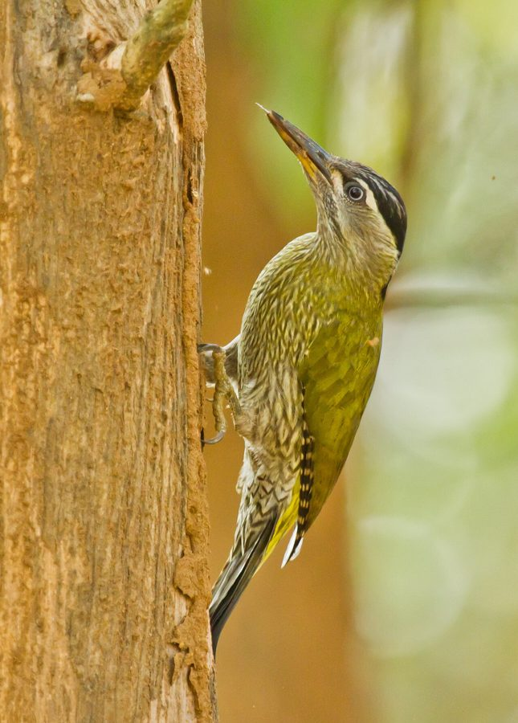

स्ट्रीक-थ्रोटेड कठफोड़वाStreak-throated Woodpecker
Picus xanthopygaeus · Picidae · BRD-0290

- Scientific name वैज्ञानिक नाम
- Picus xanthopygaeus (J.E.Gray & G.R.Gray, 1847)
- Family कुल
- Picidae
- Hindi हिंदी
- स्ट्रीक-थ्रोटेड कठफोड़वा
- Local names स्थानीय नाम
- streak-throated woodpecker, strik throtid kathphorwa, strik-throtid kathphodva
- Status here यहाँ की स्थिति
- native
- Movement आवागमन
- Resident, here all year
- Known from कहाँ दर्ज
- Others have published records from the wider Awadh–Purvanchal plain, none yet from Basti–Ayodhya अवध–पूर्वांचल से दूसरों के प्रकाशित अभिलेख, बस्ती–अयोध्या से अभी नहीं
- IUCN IUCN
- LC
- Review समीक्षा
- not yet reviewed
When to look कब देखें
Present all year. साल भर मौजूद।
Tell it apart from इनसे अलग पहचानें
स्ट्रीक-थ्रोटेड कठफोड़वा / Streak-throated Woodpecker
Picus xanthopygaeus (J.E.Gray & G.R.Gray, 1847) — Picidae
स्ट्रीक-थ्रोटेड कठफोड़वा — उत्तरी भारत के खुले जंगलों, आम के बागों और नहरों के किनारे पेड़ों पर मिलने वाला एक मध्यम आकार का हरा कठफोड़वा है। इसके गले पर बारीक धारियां और पीठ पर चमकीला हरा रंग होता है। यह अक्सर पेड़ों के निचले तनों और जमीन पर उतरकर चींटियां खाता है।
Quick Identification त्वरित पहचान
| Feature | Description |
|---|---|
| Plumage pattern | Grass-green back with contrasting bright yellow rump and barred wing quills |
| Throat pattern | Greyish-white throat boldly streaked with dark olive-brown lines |
| Crown and crest | Bright crimson in adult male; blackish streaked with grey in female |
| Facial markings | White supercilium bordered above by a thin black line; pale ear-coverts |
| Underparts | Pale greenish-buff boldly marked with dark olive squamations and scale-like bars |
Distinctive medium-sized woodpecker recognized by its bright grass-green upperparts, brilliant yellow rump, and finely streaked throat. It frequently descends to the ground to forage for ants, hopping awkwardly with tail propped against turf or fallen deadwood.
Field tip: Look along the lower third of tree trunks in open groves or on open ground near ant nests in early morning.
हिंदी: पीठ का घास जैसा हरा रंग और कमर का चमकीला पीलापन इसे दूर से पहचान कराता है। इसके गले पर काली-सफेद धारियां होती हैं। नर के सिर पर लाल कलगी होती है जबकि मादा का सिर काला-स्लेटी होता है।
Morphology आकारिकी
Biometrics as given by Baker (1927) as Picus vittatus:
| Measurement | Value | Source |
|---|---|---|
| Total length | About 300 mm | Baker (1927) as Picus vittatus |
| Wing | 122 to 130 mm | Baker (1927) as Picus vittatus |
| Tail | 83 to 93 mm | Baker (1927) as Picus vittatus |
| Tarsus | 25 to 26 mm | Baker (1927) as Picus vittatus |
| Culmen | 25 to 30 mm | Baker (1927) as Picus vittatus |
Adult male displays bright crimson crown and crest feathers, occasionally tipped with orange on the nape. Upper back and wing-coverts are vibrant grass-green; lower rump is intense golden-yellow. Tail feathers are greenish-brown with pale bars on outermost pairs. Throat is pale fulvous-grey streaked with white and dark brown; lower breast and belly are pale greenish-fulvous boldly marked with dark scale-like squamations. Bill is horny-yellow with browner upper mandible; iris is crimson-red with an outer pink ring; legs and feet are olive-slate. Female resembles male but possesses black crown and crest without crimson.
Vocalisations. A sharp, ringing nasal call uttered when taking flight, alongside a distinctive series of rhythmic tapping and rapid drumming on hollow dry branches.
हिंदी: इसके शरीर का ऊपरी हिस्सा चमकीला हरा और पूंछ भूरी-हरी होती है (Baker 1927 as Picus vittatus)। नर के सिर पर लाल ताज होता है और आंखें लाल होती हैं। मादा में लाल रंग की जगह काला-भूरा ताज होता है।
Behaviour & Ecology व्यवहार और पारिस्थितिकी
A diurnal, arboreal and terrestrial forager adapted to diverse woodland habitats. Unlike many woodpeckers that spend most of their time high in tree canopies, this species regularly feeds on the forest floor, extracting ground-dwelling ants and termites. When alarmed on the ground, it bounds quickly into the nearest tree, hitching upwards in jerky spirals while keeping the trunk between itself and the observer. Flight is deeply undulating, consisting of several rapid wing-beats alternating with closed-wing dips.
हिंदी: यह पक्षी पेड़ों के तनों पर ऊपर की ओर चक्कर काटते हुए चढ़ता है और जमीन पर भी उतरकर दीमक और चींटियां ढूंढता है। खतरा महसूस होते ही यह तुरंत पेड़ के तने की ओट में छिप जाता है। इसकी उड़ान लहरदार होती है।
Life Cycle / Phenology जीवन चक्र
Breeding occurs across northern India primarily during late spring and early summer. Pairs excavate nesting cavities in decaying trunks or stout branches of softwood trees, often several metres above ground level. Both sexes participate in chipping out the entrance hole and nesting chamber, which is bare of nesting material except for wood chips. A single brood is reared each season, with both parents incubating eggs and provisioning nestlings with regurgitated ant larvae.
हिंदी: बसंत और गर्मी के मौसम में यह अपना घोंसला पुराने या सूखे पेड़ों के तनों में छेद करके बनाता है। नर और मादा दोनों मिलकर लकड़ी को चोंच से काटकर गुहा तैयार करते हैं। दोनों मिलकर बच्चों को चींटियों के लार्वा खिलाकर पालते हैं।
Host Plants or Prey आहार
Specialized forager feeding heavily on terrestrial and arboreal ants and termites. It also extracts beetle larvae from decaying wood and consumes pulp of wild figs and nectar from silk-cotton blossoms during flowering seasons. In agrarian landscapes it visits orchards containing Mango (Mangifera indica) and groves of Sal (Shorea robusta) in search of wood-boring grubs.
हिंदी: इसका मुख्य भोजन चींटियां, दीमक और लकड़ी में छेद करने वाले भृंगों के लार्वा हैं। इसके अलावा यह गूलर और अंजीर के पके फल तथा सेमल के फूलों का रस भी पीता है। आम और साल के बागों में यह तनों पर कीड़े ढूंढता है।
Predators / Natural Enemies शत्रु
Adults fall prey to medium-sized raptors such as accipiters and large owls during roosting hours. Eggs and nestlings inside tree cavities are vulnerable to arboreal predators, including tree snakes and monitor lizards. Cavity competitors such as mynas occasionally displace breeding pairs from fresh nest excavations.
हिंदी: बाज और उल्लू इसका शिकार कर सकते हैं। पेड़ की गुहा में रखे अंडों और चूजों को पेड़ पर चढ़ने वाले सांपों और गोह से खतरा रहता है। कभी-कभी मैना इसके बने-बनाए घोंसले पर कब्जा कर लेती है।
Agricultural / Human Relevance कृषि प्रासंगिकता
Protected under the Wildlife (Protection) Act 1972. Highly beneficial to forestry and horticulture because of its role in regulating populations of destructive wood-boring insects, carpenter ants, and subterranean termites in fruit orchards and timber plantations. It causes no damage to crops or commercial timber.
हिंदी: वन्यजीव (संरक्षण) अधिनियम 1972 के तहत संरक्षित। यह आम के बागों और लकड़ी के जंगलों में तना-छेदक कीड़ों और दीमक को खाकर फसलों और पेड़ों की रक्षा करता है। यह खेती या इंसानों को कोई नुकसान नहीं पहुंचाता।
Expected Locally स्थानीय रूप से अपेक्षित
Not a field record. Written from published accounts for eastern Uttar Pradesh. No confirmed local sighting yet — if you have seen it, that is what the atlas needs.
अभी तक स्थानीय पुष्टि नहीं। यह विवरण प्रकाशित स्रोतों से है, किसी अवलोकन से नहीं।
Occurs in open deciduous forest patches, riverine tree belts, mature mango orchards, and canal plantations across the northern plain. Observers in eastern Uttar Pradesh should look in old village groves and woodland fringes adjoining the Rapti and Kuwana rivers.
GBIF holds published records from the wider Awadh–Purvanchal plain, none yet from Basti–Ayodhya.
A first local record for the atlas would be a clear photograph showing plumage details, accompanied by date, time, and precise location coordinates sent through the project's About page.
हिंदी: यह पक्षी खुले जंगलों, आम के पुराने बागों और नहरों के किनारे लगे पेड़ों में मिल सकता है। बस्ती और अयोध्या के इलाके में राप्ती और कुआनो नदी के आसपास के पेड़ों पर इसे देखा जा सकता है।
Distribution वितरण
Global range: South Asia and parts of Southeast Asia, ranging from the Himalayan foothills across India, Nepal, Bhutan, Myanmar, and into Indochina.
In India: Widely distributed in the Himalayan foothills from Himachal Pradesh to northeast India, and locally through peninsular woodland tracts.
In Uttar Pradesh: Distributed across the Terai forest tract and northern alluvial woodlands.
In Basti district / eastern UP: Expected in mature orchards, grove woodlands, and riverine tree belts based on contiguous regional habitat.
हिंदी: यह हिमालय की तलहटी, उत्तर भारत के मैदानी इलाकों और दक्षिण-पूर्व एशिया में पाया जाता है। उत्तर प्रदेश के तराई क्षेत्र और मध्य मैदानों के पुराने बाग-बगीचों में इसका वास है।
Research Questions शोध प्रश्न
- What tree species are most frequently selected for nest-hole excavation in agrarian landscapes?
- Does the species forage more on the ground during dry winter months compared to monsoon? / क्या यह पक्षी बरसात की तुलना में सूखी सर्दियों में जमीन पर अधिक चींटियां खोजता है?
- How severely do secondary cavity-nesting birds compete with this woodpecker for freshly excavated tree holes?
- A child can watch an ant trail on a mango trunk in the morning to see if any woodpecker visits the tree / क्या सुबह के समय आम के तने पर चींटियों को खाने कोई कठफोड़वा आता है?
- How does the fragmentation of old mango orchards affect local territory occupancy across eastern Uttar Pradesh?
हिंदी: पुराने आम के बागों के कटने से इसके रहने की जगह पर क्या असर पड़ता है? यह पक्षी कौन से पेड़ों में अपना घोंसला बनाना सबसे ज्यादा पसंद करता है?
Similar Species मिलती-जुलती प्रजातियाँ
| Species | How to tell apart | हिंदी | |
|---|---|---|---|
| Black-rumped Flameback \ | Dinopium benghalense | Golden-yellow mantle, black lower back and rump, and only three toes; lacks green upperparts | ब्लैक-रम्प्ड फ्लेमबैक की पीठ सुनहरी पीली और कमर काली होती है |
| Yellow-crowned Woodpecker \ | Leiopicus mahrattensis | Much smaller body, dark brown-and-white barred mantle, and yellow-orange crown | येलो-क्राउन्ड कठफोड़वा काफी छोटा होता है और पीठ पर काली-सफेद धारियां होती हैं |
Field rule: Bright grass-green upperparts with brilliant yellow rump and finely streaked throat.
हिंदी: हरी पीठ, पीली कमर और धारीदार गले से यह कठफोड़वा दूसरे कठफोड़वों से आसानी से अलग पहचाना जाता है।
Taxonomy & Classification वर्गीकरण
Original description. J.E. Gray & G.R. Gray (1847) — see GBIF.
Subspecies. Monotypic species. Formerly treated by Baker (1927) as Picus vittatus and by Blanford & Oates as Gecinus striolatus.
Family and order placement. Belongs to the family Picidae, order Piciformes, class Aves.
Phylogenetic notes. Placed within the green woodpecker genus Picus, distinct from the flamebacks of Dinopium and Chrysocolaptes.
IUCN status rationale. Assessed globally as Least Concern (LC) by IUCN (BirdLife International 2024) owing to its extremely broad geographical distribution.
हिंदी: इसका वैज्ञानिक विवरण 1847 में प्रकाशित हुआ था। यह पिसिडी कुल का पक्षी है और वैश्विक स्तर पर कम चिंताजनक श्रेणी में रखा गया है।
Photo Gallery फोटो गैलरी
No photos yet — add field photos to media/species/streak_throated_woodpecker/ and run node scripts/sync_photos.js.
Photos needed आवश्यक फोटो
- [ ] Adult male showing crimson crest and streaked throat (वयस्क नर की लाल कलगी और धारीदार गला)
- [ ] Adult foraging on ground or lower tree trunk (जमीन या पेड़ के तने पर आहार खोजता पक्षी)
- [ ] View of bright golden-yellow rump in flight (उड़ान के समय दिखने वाली चमकीली पीली कमर)
References संदर्भ
- Original description: J.E. Gray & G.R. Gray, 1847 — see GBIF.
- Baker, E. C. S. (1927). The Fauna of British India, Including Ceylon and Burma: Birds. 2nd ed., Vol. 4. Taylor & Francis, London. (as Picus vittatus).
- Ali, S. & Ripley, S. D. (1983). Handbook of the Birds of India and Pakistan. Compact ed. Oxford University Press, New Delhi.
- Grimmett, R., Inskipp, C. & Inskipp, T. (2011). Birds of the Indian Subcontinent. 2nd ed. Christopher Helm, London.
- Rasmussen, P. C. & Anderton, J. C. (2012). Birds of South Asia: The Ripley Guide. Vols. 1–2. 2nd ed. Smithsonian Institution and Lynx Edicions.
- IUCN Red List of Threatened Species: Picus xanthopygaeus, 2024.
- GBIF Occurrence Data — Picus xanthopygaeus, India (2025).
Source file: species/fauna/birds/streak_throated_woodpecker.md